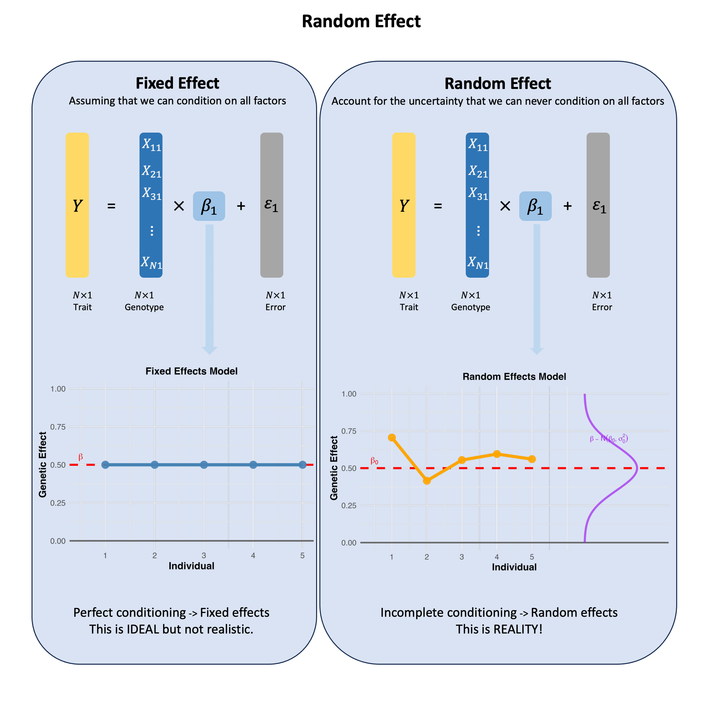

Random Effect#
A random effect reflects our uncertainty when we haven’t conditioned on all the relevant factors - if we could measure and control for everything that matters, the effect would be fixed, but since we can’t, we model our incomplete knowledge as randomness.
Graphical Summary#

Key Formula#
Under the single marker linear regression, instead of the fixed value of \(\beta\) as we discussed in OLS, in the random effect model, we acknowledge that we haven’t conditioned on all relevant factors that influence the genetic effect:
\(\mathbf{Y}\) is the \(N \times 1\) vector of trait values for \(N\) individuals
\(\mathbf{X}\) is the \(N \times 1\) vector of the genotype vector for a single variant across \(N\) individuals
\(\beta\) is the random effect that captures our uncertainty due to incomplete conditioning - if we could measure all factors affecting this variant’s impact (population background, environmental interactions, etc.), \(\beta\) would be fixed, but since we can’t, we model it as drawn from \(N(\beta_0, \sigma_0^2)\)
\(\epsilon\) is the \(N \times 1\) vector of error terms for \(N\) individuals and \(\epsilon \sim N(0, \sigma^2)\)
Technical Details#
The core question is not whether we should condition on all factors, but that we cannot - there are always unknown factors affecting genetic effects, making random effects the realistic choice.
Fixed Effects Model#
Assumes \(\beta\) is constant across all contexts - this would only be true if we could condition on every single factor that influences the genetic effect:
Population structure, environmental exposures, gene-gene interactions, developmental timing
Problem: There are always unknown factors we haven’t even discovered yet
Key insight: When we can condition on most major factors, fixed effects models are simpler and more powerful. The justification depends on careful covariate selection.
Flexibility: GWAS summary statistics from fixed effects can also be reanalyzed using random effects models (including Bayesian mixture approaches) to account for heterogeneity when needed.
Random Effects Model#
Acknowledges the reality that \(\beta\) varies because there will always be unmeasured factors:
Environmental factors we didn’t think to measure
Population stratification we haven’t detected
Gene-environment interactions we don’t know exist
Biological processes we haven’t discovered yet
Key Insight#
However,
In practice, we can never achieve complete conditioning because we don’t even know what all the relevant factors are. Random effects models honestly acknowledge this fundamental limitation - there’s always something affecting genetic effects that we haven’t accounted for.
Example#
Example 1 – Individual-Level Random Effects Simulation#
What happens when we acknowledge that genetic effects aren’t the same for everyone? Let’s see this in action using the same 5 individuals, but now allowing each person to have their own unique genetic effect size.
Instead of assuming one fixed effect for everyone, we’ll draw each person’s genetic effect from a distribution. This captures the reality that the same variant might have slightly different impacts across individuals due to all the factors we can’t measure or don’t even know about.
# Clear the environment
rm(list = ls())
set.seed(11)
# Define genotypes for 5 individuals at 3 variants
# These represent actual alleles at each position
# For example, Individual 1 has genotypes: CC, CT, AT
genotypes <- c(
"CC", "CT", "AT", # Individual 1
"TT", "TT", "AA", # Individual 2
"CT", "CT", "AA", # Individual 3
"CC", "TT", "AA", # Individual 4
"CC", "CC", "TT" # Individual 5
)
# Reshape into a matrix
N = 5
M = 3
geno_matrix <- matrix(genotypes, nrow = N, ncol = M, byrow = TRUE)
rownames(geno_matrix) <- paste("Individual", 1:N)
colnames(geno_matrix) <- paste("Variant", 1:M)
alt_alleles <- c("T", "C", "T")
# Convert to raw genotype matrix using the additive / dominant / recessive model
Xraw_additive <- matrix(0, nrow = N, ncol = M) # dount number of non-reference alleles
rownames(Xraw_additive) <- rownames(geno_matrix)
colnames(Xraw_additive) <- colnames(geno_matrix)
for (i in 1:N) {
for (j in 1:M) {
alleles <- strsplit(geno_matrix[i,j], "")[[1]]
Xraw_additive[i,j] <- sum(alleles == alt_alleles[j])
}
}
X <- scale(Xraw_additive, center = TRUE, scale = TRUE)
Let’s assume that the first variant is the true causal variant and its \(\beta\) comes from a normal distribution \(N(0,1)\), while the error term comes from a distribution \(N(0,0.3)\), then the observed trait value would be:
beta <- rnorm(N, mean = 0, sd = 1)
epsilon <- rnorm(N, mean = 0, sd = 0.3)
Y <- X[, 1] * beta + epsilon
Here the beta actually comes from a distribution and has different values for each individuals:
beta
- -0.591031102584368
- 0.026594369016167
- -1.51655309708187
- -1.36265334929581
- 1.17848915603162
Example 2 – APOE \(\varepsilon4\) and Alzheimer’s Disease#
Let’s use a real-world example to understand when genetic effects should be treated as fixed versus random. Consider the APOE \(\varepsilon4\) variant, one of the strongest known genetic risk factors for Alzheimer’s disease.
Why APOE \(\varepsilon4\) Effects Vary?
Imagine you’re studying APOE \(\varepsilon4\)’s effect on Alzheimer’s risk. The key insight is that this effect isn’t the same for everyone - it depends on factors we may or may not have measured.
When would APOE \(\varepsilon4\) have a “fixed” effect? Only if we’ve conditioned on all the key factors:
Ancestry: European populations show strong APOE \(\varepsilon4\) effects, while some other populations show weaker associations
Age: APOE \(\varepsilon4\) barely affects risk before age 65, but has large effects in older adults
Sex: Alzheimer’s affects women twice as often as men, and APOE \(\varepsilon4\) effects differ by sex
…
If we study only elderly European women (and very likely a lot of other factors fixed), we might see a consistent APOE \(\varepsilon4\) effect - making it reasonable to treat as “fixed.”
But what happens when we don’t condition properly? If our study includes mixed ancestry, all ages, and both sexes without accounting for these differences, we may see wildly varying APOE \(\varepsilon4\) effects:
Europeans: large effect size
Hispanics: moderate effect size
Young people: tiny effect size
Elderly: large effect size
And so on…
Now APOE \(\varepsilon4\)’s effect looks “random” - but it’s not truly random, it’s just that we haven’t conditioned on the factors that determine the effect size.
In this R example we just assume that there is no other factor (which is very unlikely to be true) in this model, and conduct two analysis:
# Clear environment and set seed for reproducibility
rm(list = ls())
set.seed(11)
# Create a diverse study population
N <- 1000
# Generate population characteristics
ancestry <- sample(c("European", "Hispanic", "African", "Asian"), N, replace = TRUE,
prob = c(0.4, 0.3, 0.2, 0.1))
age <- sample(50:85, N, replace = TRUE)
sex <- sample(c("Female", "Male"), N, replace = TRUE, prob = c(0.6, 0.4))
# Generate APOEe4 genotypes (0, 1, or 2 copies)
APOEe4_copies <- sample(0:2, N, replace = TRUE, prob = c(0.7, 0.25, 0.05))
# The "true" APOEe4 effect depends on all these factors
# Base effect sizes by ancestry
base_effect <- ifelse(ancestry == "European", 1.2,
ifelse(ancestry == "Hispanic", 0.8,
ifelse(ancestry == "African", 0.6, 0.9)))
# Age modifier (stronger effect in elderly)
age_modifier <- ifelse(age >= 65, 1.5, 0.3)
# Sex modifier (stronger in females)
sex_modifier <- ifelse(sex == "Female", 1.3, 1.0)
# Calculate individual-specific effect sizes
true_effect <- base_effect * age_modifier * sex_modifier
# Generate Alzheimer's risk (log-odds scale)
risk_score <- APOEe4_copies * true_effect + rnorm(N, 0, 0.5)
# Create dataframe
study_data <- data.frame(
id = 1:N,
ancestry = ancestry,
age = age,
sex = sex,
APOEe4_copies = APOEe4_copies,
true_effect = true_effect,
risk_score = risk_score
)
# Scenario 1: FIXED EFFECTS - Properly conditioned
# Analyze only elderly European females (well-conditioned subset)
conditioned_data <- subset(study_data, ancestry == "European" & age >= 65 & sex == "Female")
cat("=== FIXED EFFECTS SCENARIO ===\n")
cat("Analyzing elderly European females only\n")
cat("Sample size:", nrow(conditioned_data), "\n")
fixed_model <- lm(risk_score ~ APOEe4_copies, data = conditioned_data)
cat("APOEe4 effect estimate:", round(coef(fixed_model)[2], 3), "\n")
cat("Standard error:", round(summary(fixed_model)$coefficients[2,2], 3), "\n")
cat("Effect variation (SD across individuals):", round(sd(conditioned_data$true_effect), 3), "\n\n")
=== FIXED EFFECTS SCENARIO ===
Analyzing elderly European females only
Sample size: 135
APOEe4 effect estimate: 2.399
Standard error: 0.066
Effect variation (SD across individuals): 0
# Scenario 2: RANDOM EFFECTS - Poorly conditioned
# Analyze the full diverse population without conditioning
cat("=== RANDOM EFFECTS SCENARIO ===\n")
cat("Analyzing full diverse population without conditioning\n")
cat("Sample size:", nrow(study_data), "\n")
unconditioned_model <- lm(risk_score ~ APOEe4_copies, data = study_data)
cat("APOEe4 effect estimate:", round(coef(unconditioned_model)[2], 3), "\n")
cat("Standard error:", round(summary(unconditioned_model)$coefficients[2,2], 3), "\n")
cat("Effect variation (SD across individuals):", round(sd(study_data$true_effect), 3), "\n\n")
=== RANDOM EFFECTS SCENARIO ===
Analyzing full diverse population without conditioning
Sample size: 1000
APOEe4 effect estimate: 1.076
Standard error: 0.038
Effect variation (SD across individuals): 0.738
# Show the heterogeneity we're missing
effect_by_group <- aggregate(true_effect ~ ancestry + sex + (age >= 65),
data = study_data, FUN = mean)
colnames(effect_by_group) <- c("Ancestry", "Sex", "Elderly", "Mean_Effect")
effect_by_group
| Ancestry | Sex | Elderly | Mean_Effect |
|---|---|---|---|
| <chr> | <chr> | <lgl> | <dbl> |
| African | Female | FALSE | 0.234 |
| Asian | Female | FALSE | 0.351 |
| European | Female | FALSE | 0.468 |
| Hispanic | Female | FALSE | 0.312 |
| African | Male | FALSE | 0.180 |
| Asian | Male | FALSE | 0.270 |
| European | Male | FALSE | 0.360 |
| Hispanic | Male | FALSE | 0.240 |
| African | Female | TRUE | 1.170 |
| Asian | Female | TRUE | 1.755 |
| European | Female | TRUE | 2.340 |
| Hispanic | Female | TRUE | 1.560 |
| African | Male | TRUE | 0.900 |
| Asian | Male | TRUE | 1.350 |
| European | Male | TRUE | 1.800 |
| Hispanic | Male | TRUE | 1.200 |
The ‘randomness’ isn’t truly random - it reflects our failure to condition on ancestry, age, and sex! But if we don’t measure and condition on these factors, the effect appears random from our perspective.
Even worse: There are always factors we don’t even know about yet. Maybe APOE \(\varepsilon4\) effects also depend on:
Specific dietary patterns we haven’t discovered
Interactions with other genes we haven’t identified
Environmental exposures we haven’t thought to measure
Biological pathways we don’t understand yet
This is why random effects models are often more realistic - they acknowledge that no matter how careful we are, there are always unmeasured factors creating heterogeneity in genetic effects. The “randomness” captures our incomplete knowledge, not true biological randomness.
Supplementary#
Graphical Summary#
library(ggplot2)
library(gridExtra)
# Set up data for 5 individuals
individuals <- 1:5
fixed_effect <- 0.5 # Same effect for all individuals
set.seed(42)
random_effects <- rnorm(5, mean = 0.5, sd = 0.15) # Random effects around 0.5
# Create data frames
fixed_data <- data.frame(
individual = individuals,
effect = rep(fixed_effect, 5)
)
random_data <- data.frame(
individual = individuals,
effect = random_effects
)
# Fixed Effects Plot
p1 <- ggplot(fixed_data, aes(x = individual, y = effect)) +
geom_hline(yintercept = 0, color = "gray40", linewidth = 1.5) +
geom_hline(yintercept = fixed_effect, linetype = "dashed",
color = "red", linewidth = 2) +
geom_point(color = "steelblue", size = 7, alpha = 0.9) +
geom_line(color = "steelblue", linewidth = 3) +
annotate("text", x = 0.5, y = fixed_effect + 0.05,
label = expression(beta),
color = "red", size = 6, fontface = "bold") +
labs(x = "Individual", y = "Genetic Effect",
title = "Fixed Effects Model") +
scale_x_continuous(breaks = 1:5) +
ylim(0, 1) +
theme_minimal(base_size = 18) +
theme(
plot.title = element_text(size = 20, face = "bold", hjust = 0.5),
axis.title = element_text(size = 20, face = "bold"),
axis.text = element_text(size = 16),
axis.ticks = element_blank()
)
# Random Effects Plot
p2 <- ggplot(random_data, aes(x = individual, y = effect)) +
geom_hline(yintercept = 0, color = "gray40", linewidth = 1.5) +
geom_hline(yintercept = 0.5, linetype = "dashed",
color = "red", linewidth = 2) +
geom_point(color = "orange", size = 7, alpha = 0.9) +
geom_line(color = "orange", linewidth = 3) +
annotate("text", x = 0.5, y = 0.55,
label = expression(beta[0]),
color = "red", size = 6, fontface = "bold") +
labs(x = "Individual", y = "Genetic Effect",
title = "Random Effects Model") +
scale_x_continuous(breaks = 1:5) +
ylim(0, 1) +
theme_minimal(base_size = 18) +
theme(
plot.title = element_text(size = 20, face = "bold", hjust = 0.5),
axis.title = element_text(size = 20, face = "bold"),
axis.text = element_text(size = 16),
axis.ticks = element_blank()
)
# Add distribution curve to random effects plot
x_curve <- seq(0, 1, length.out = 100)
y_curve <- dnorm(x_curve, mean = 0.5, sd = 0.15)
# Scale and shift the curve to fit on the right side (further away)
y_curve_scaled <- (y_curve / max(y_curve)) * 1.5 + 6.5 # Scale to fit x-axis range, moved further right
curve_data <- data.frame(x = y_curve_scaled, y = x_curve)
# Enhanced Random Effects Plot with distribution
p2 <- ggplot(random_data, aes(x = individual, y = effect)) +
geom_hline(yintercept = 0, color = "gray40", linewidth = 1.5) +
geom_hline(yintercept = 0.5, linetype = "dashed",
color = "red", linewidth = 2) +
geom_point(color = "orange", size = 7, alpha = 0.9) +
geom_line(color = "orange", linewidth = 3) +
# Add distribution curve
geom_path(data = curve_data, aes(x = x, y = y),
color = "purple", linewidth = 2, alpha = 0.7) +
annotate("text", x = 0.5, y = 0.55,
label = expression(beta[0]),
color = "red", size = 6, fontface = "bold") +
annotate("text", x = 7.2, y = 0.7,
label = expression(beta %~% N(beta[0], sigma[0]^2)),
color = "purple", size = 5, fontface = "bold") +
labs(x = "Individual", y = "Genetic Effect",
title = "Random Effects Model") +
scale_x_continuous(breaks = 1:5, limits = c(0.5, 8.5)) +
ylim(0, 1) +
theme_minimal(base_size = 18) +
theme(
plot.title = element_text(size = 20, face = "bold", hjust = 0.5),
axis.title = element_text(size = 20, face = "bold"),
axis.text = element_text(size = 16),
axis.ticks = element_blank()
)
p1
Warning message in is.na(x):
"is.na() applied to non-(list or vector) of type 'expression'"

p2
Warning message in is.na(x):
"is.na() applied to non-(list or vector) of type 'expression'"
Warning message in is.na(x):
"is.na() applied to non-(list or vector) of type 'expression'"

# Save individual plots
ggsave("./cartoons/random_effects_fixed.png", plot = p1,
width = 8, height = 6,
bg = "transparent",
dpi = 300)
ggsave("./cartoons/random_effects_random.png", plot = p2,
width = 10, height = 6,
bg = "transparent",
dpi = 300)
Warning message in is.na(x):
"is.na() applied to non-(list or vector) of type 'expression'"
Warning message in is.na(x):
"is.na() applied to non-(list or vector) of type 'expression'"
Warning message in is.na(x):
"is.na() applied to non-(list or vector) of type 'expression'"